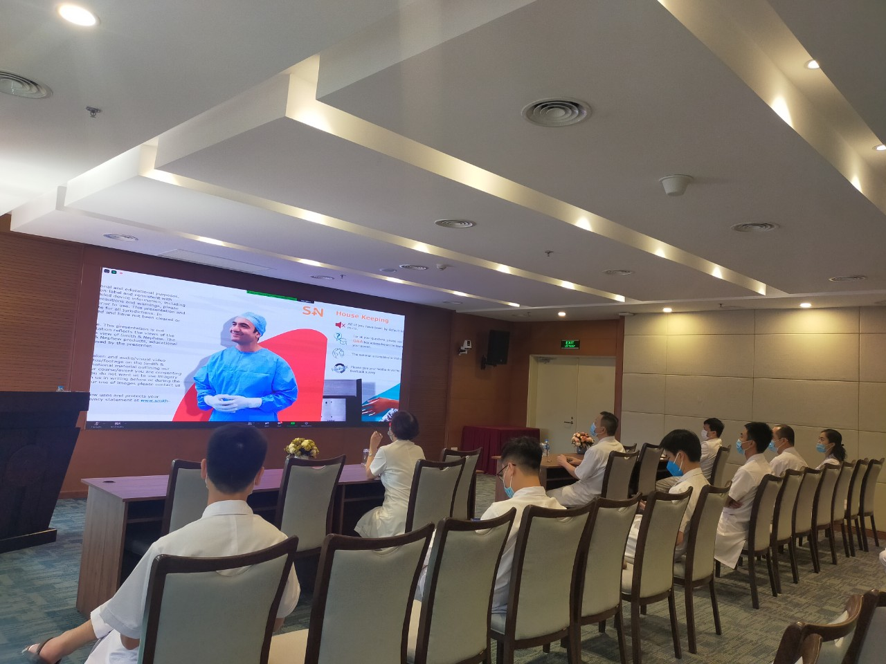

Hội thảo khoa học: Cập nhật tiên tiến điều trị nội khoa
Hội thảo khoa học: Cập nhật tiên tiến điều trị nội khoa
15:27PM 13/10/2021
07:23AM 16/10/2021
Chiều ngày 15/10/2021 tại Hội trường 2 - Vitam đã diễn ra buổi Hội
thảo khoa học trực tuyến với chủ đề: Chẩn đoán và điều trị ngủ ngáy
và ngừng thở khi ngủ.
Tham dự buổi Hội thảo có Giáo sư Srinivas Kishore chuyên gia Tai mũi
họng, Bệnh viện AIG, Hyderabad, Ấn Độ, Giáo sư Yap Yoke Yeow chuyên
gia Tai mũi họng, Bệnh viện hạng đặc biệt KPJ Johor, Malaysia, TS.
Đoàn Thị Thanh Hà - Chủ nhiệm khoa Tai Mũi Họng, Bệnh viện Trung
ương Quân đội 108, cùng đông đảo các Bác sỹ chuyên ngành Tai Mũi
Họng của Bệnh viện Trung ương Quân đội 108.
Buổi Hội thảo khoa học có ba báo cáo: Báo cáo “ Đánh giá tình trạng
của bệnh nhân ngủ ngáy và ngừng thở khi ngủ” do giáo sư Yap Yoke
Yeow chuyên gia Tai mũi họng, Bệnh viện hạng đặc biệt KPJ Johor,
Malaysia trình bày, báo cáo “Phẫu thuật mũi và amidan điều trị ngủ
ngáy và ngừng thở khi ngủ” và báo cáo “Phẫu thuật màn hầu, lưỡi và
đáy lưỡi điều trị ngủ ngáy và ngừng thở khi ngủ” do hai giáo sư
Srinivas Kishore chuyên gia Tai Mũi Họng, Bệnh viện AIG, Hyderabad,
Ấn Độ và Yap Yoke Yeow chuyên gia Tai Mũi Họng, Bệnh viện hạng đặc
biệt KPJ Johor, Malaysia cùng trình bày.
Một số hình ảnh Hội thảo khoa học
Kết thúc buổi Hội thảo khoa học, các bác sĩ đến từ nhiều chuyên ngành khác nhau của Bệnh viện TWQĐ 108 đã thảo luận rất sôi nổi về các nội dung được đề cập trong buổi Hội thảo khoa học. Buổi hội thảo đã mang lại cái nhìn mới cho các bác sĩ chuyên ngành Tai Mũi Họng về chẩn đoán và điều trị bệnh nhân ngủ ngáy và ngừng thở khi ngủ.
Chia sẻ
Hội thảo khoa học: Cập nhật tiên tiến điều trị nội khoa
15:27PM 13/10/2021
 Hội thảo khoa học: Chẩn đoán điều trị Xơ phổi
Hội thảo khoa học: Chẩn đoán điều trị Xơ phổi
14:36PM 14/10/2021
08:16AM 15/10/2021